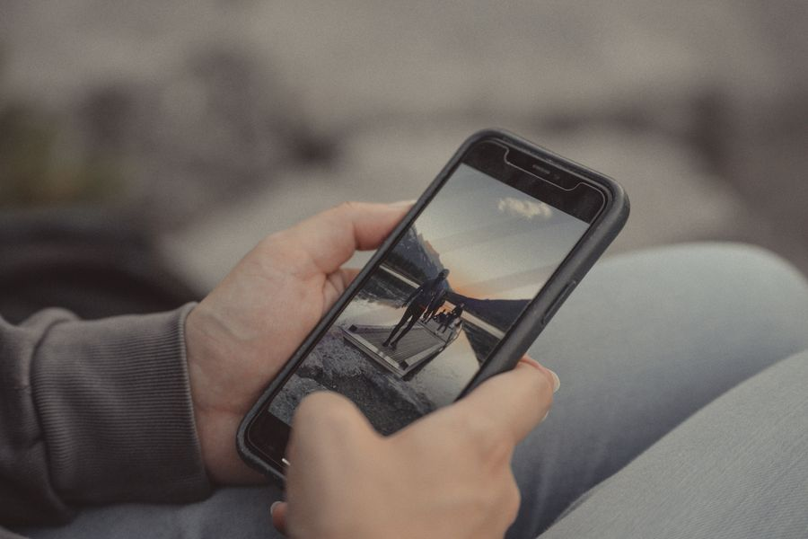
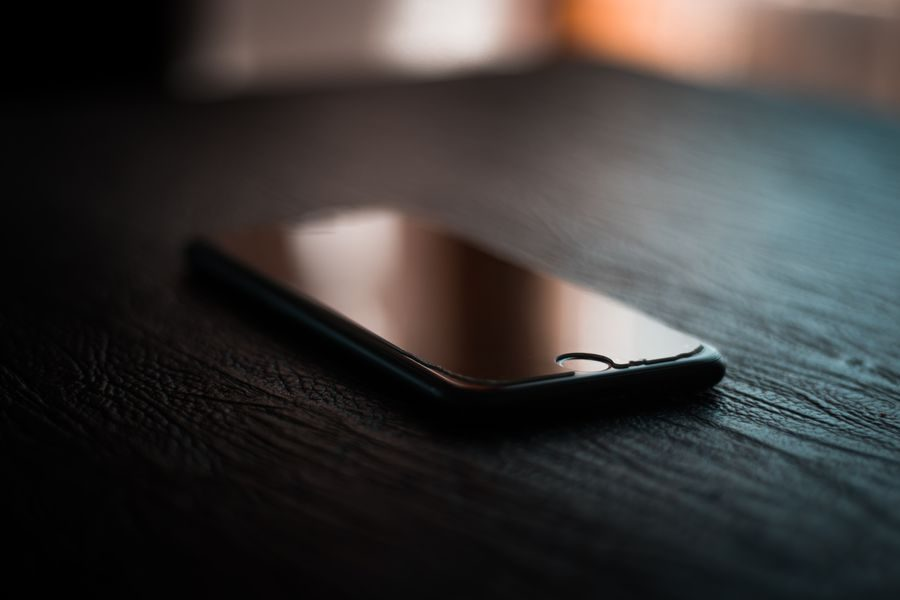

Los mejores en calidad-precio
El mejor Imagen orientativa El mejor, sin mirar el precio
Spigen Glas.tR Privacy A favor Marco de alineación: se coloca recto a la primera Recortes precisos para altavoz y cámara En contra No hay para todos los modelos Si es tu primer protector de privacidad, paga la diferencia por el marco.
Ver precio actual en Amazon
¿Te lo estás pensando? Añádelo al carrito en Amazon y decídelo con calma: te avisan si baja de precio y lo tienes a mano cuando te decidas.
No ponemos precios porque cambian cada día. Lo ves actualizado al entrar.
Gama media 
Imagen orientativa Gama media · el equilibrado
ESR Privacy Screen Protector A favor Suele venir en pack de dos con marco Buena capa antihuellas En contra Con lector de huella puede pedir volver a registrar el dedo El de mejor relación calidad-precio. Comprueba tu modelo exacto.
Ver precio actual en Amazon
¿Te lo estás pensando? Añádelo al carrito en Amazon y decídelo con calma: te avisan si baja de precio y lo tienes a mano cuando te decidas.
No ponemos precios porque cambian cada día. Lo ves actualizado al entrar.
Gama media 
Imagen orientativa Gama media · el más fiable
Belkin ScreenForce Privacy A favor Compatibilidad declarada con lector de huella en pantalla Marca con garantía y recambios Cuando no quieres jugártela con el lector de huella.
Ver precio actual en Amazon
¿Te lo estás pensando? Añádelo al carrito en Amazon y decídelo con calma: te avisan si baja de precio y lo tienes a mano cuando te decidas.
No ponemos precios porque cambian cada día. Lo ves actualizado al entrar.
El mejor barato Imagen orientativa El mejor de los baratos
Pack de dos protectores de privacidad A favor Dos unidades: si el primero sale torcido, tienes otro Muy barato En contra Compatibilidad con el lector de huella más incierta Para probar si te acostumbras a la pantalla más oscura antes de gastar más.
Ver precio actual en Amazon
¿Te lo estás pensando? Añádelo al carrito en Amazon y decídelo con calma: te avisan si baja de precio y lo tienes a mano cuando te decidas.
No ponemos precios porque cambian cada día. Lo ves actualizado al entrar.